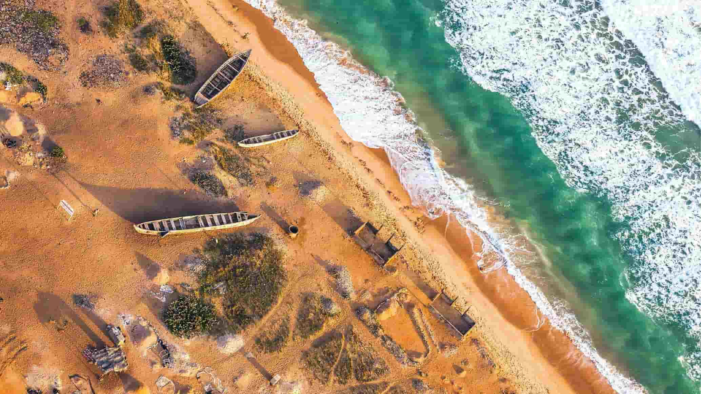
Lomé Beach
Experience the ocean, coastal scenery, and everyday life along the Togolese coast.
Discover the beauty of Togo through its beaches, rich cultural heritage, natural landscapes, and remarkable tourist attractions. Find the places that will make your journey unforgettable.
Enjoy the Atlantic coastline, sandy beaches, ocean views, and the lively atmosphere of Lomé. Discover the beauty of Togo's coastline and experience local life.

Experience the ocean, coastal scenery, and everyday life along the Togolese coast.
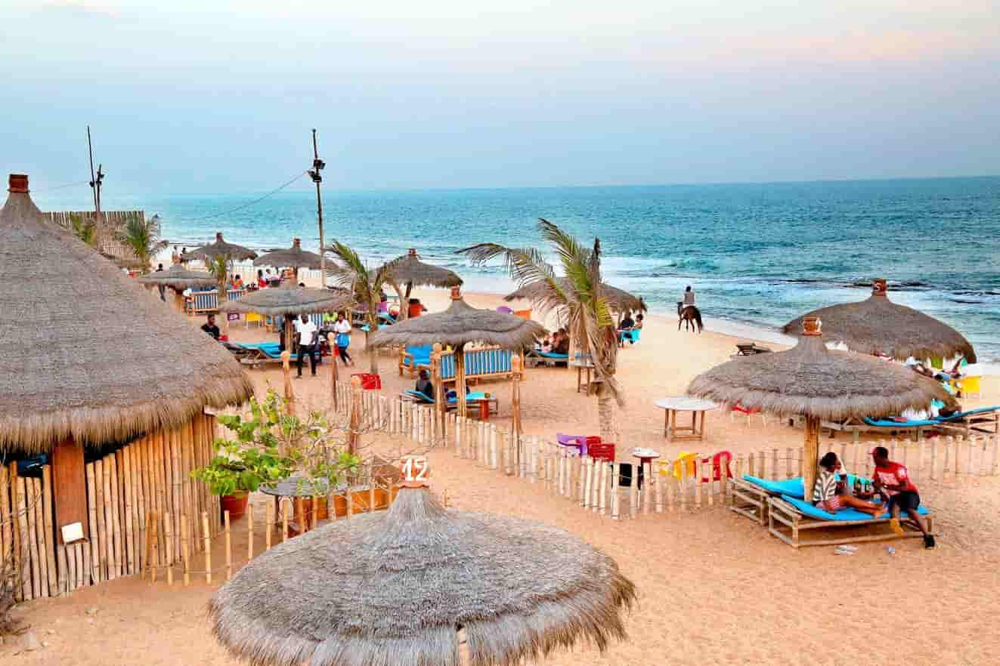
Discover a coastal area east of Lomé known for its beaches and seaside atmosphere.
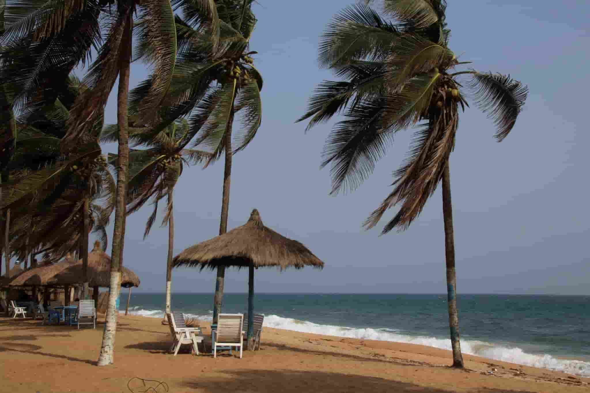
Enjoy coastal views and explore the seaside communities near Avépozo.
Discover the traditions, architecture, festivals, and history that make Togo unique. Learn about the cultural heritage passed down through generations.
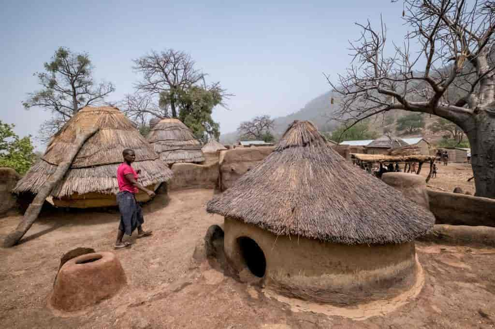
Explore the traditional architecture and cultural landscape of the Batammariba people.
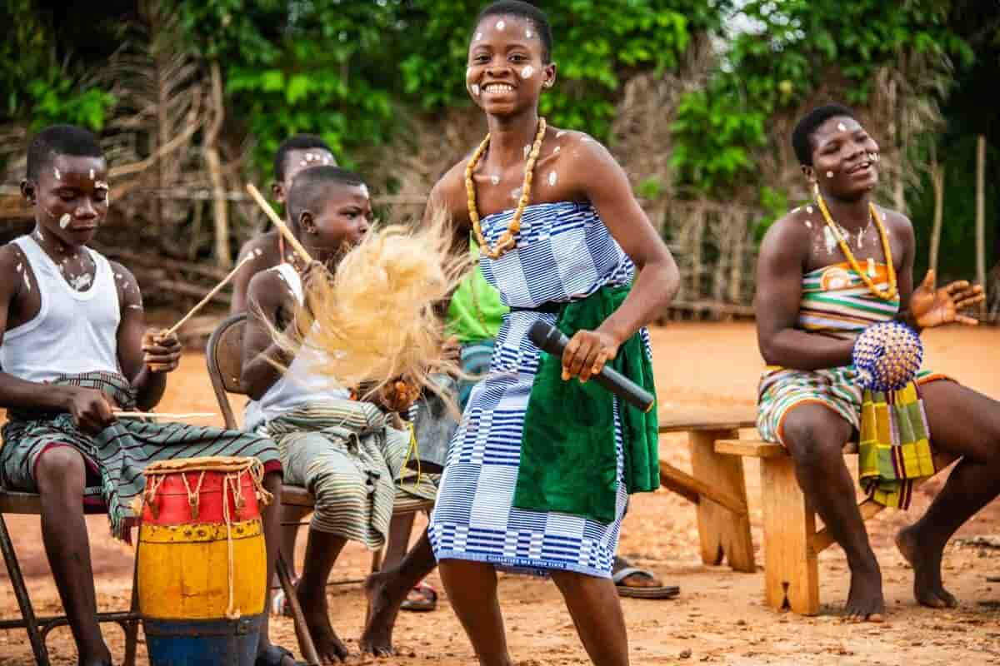
Experience traditional dances, music, and celebrations in Togolese communities.
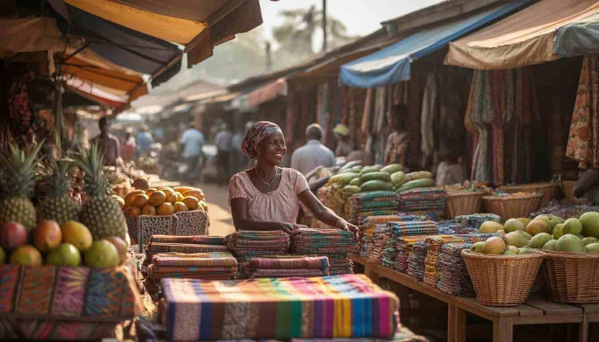
Discover local crafts, traditional products, and the daily life of Togolese communities.
Explore Togo's mountains, waterfalls, forests, and green landscapes. Discover places for hiking, sightseeing, and outdoor adventures.
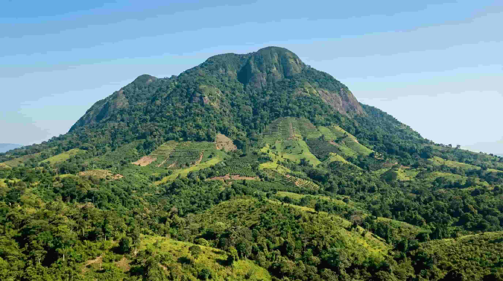
Discover Togo's highest mountain and enjoy its green surroundings and scenic views.
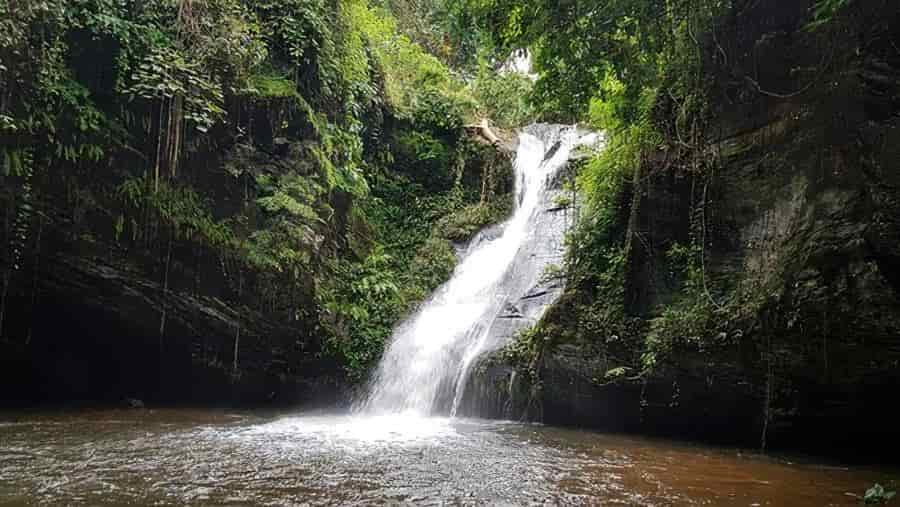
Visit beautiful waterfalls surrounded by vegetation and natural scenery.
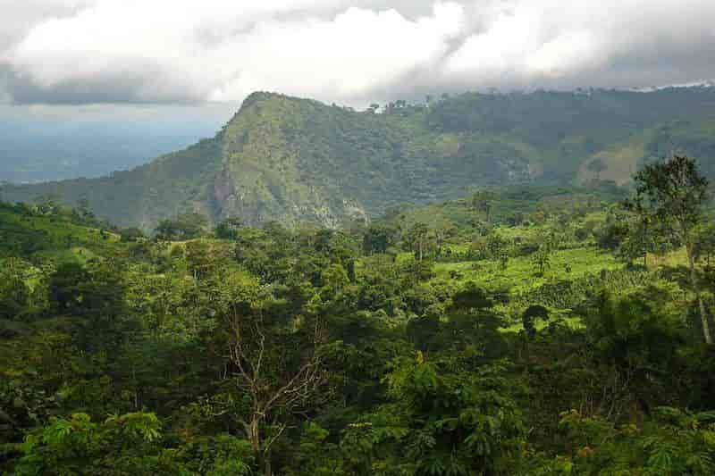
Explore natural areas and discover the diversity of Togo's landscapes.
Discover remarkable places throughout Togo, including historical monuments, cultural landmarks, museums, and protected natural areas.
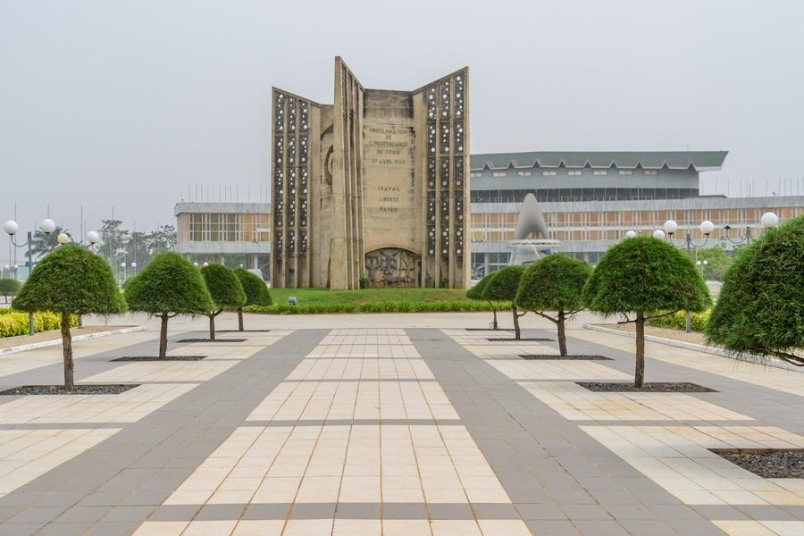
Discover a landmark in Lomé that commemorates Togo's independence.
Learn about Togolese history, cultural objects, and the country's heritage.
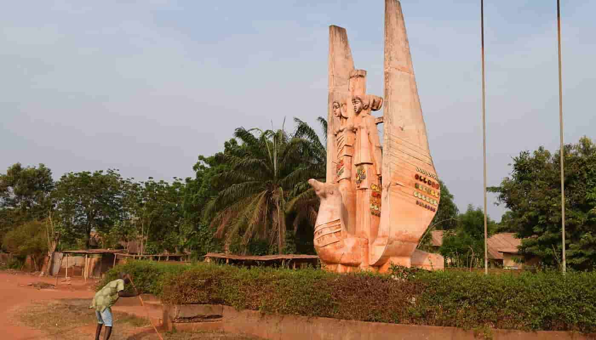
Explore a historic lakeside town known for its cultural and religious heritage.
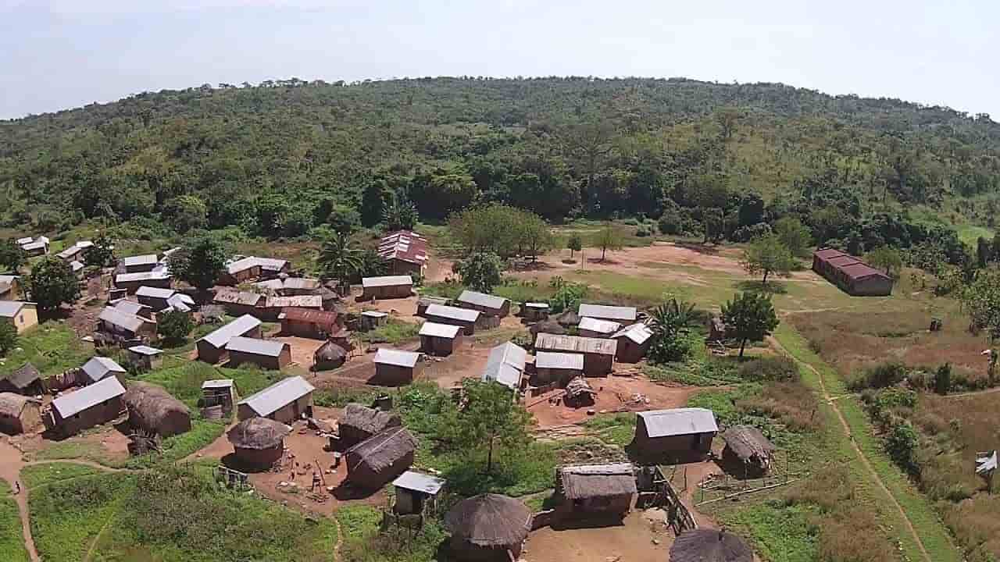
Discover a protected natural area with varied landscapes and wildlife habitats.
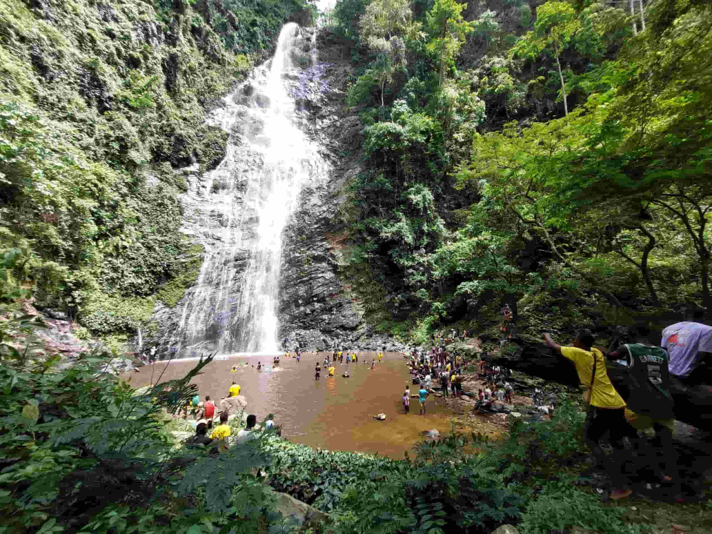
Admire a waterfall and the natural surroundings of the Plateaux Region.
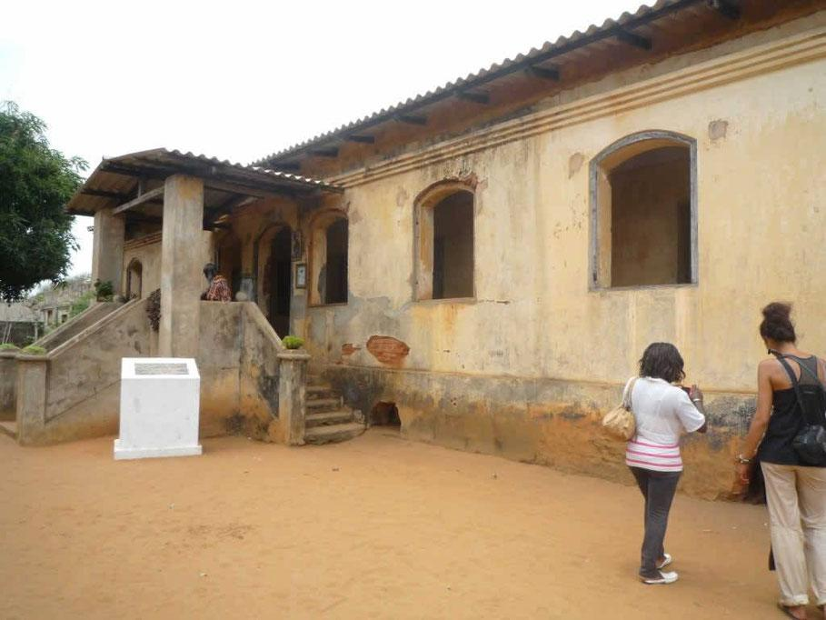
Discover more attractions, landmarks, and remarkable places across Togo.